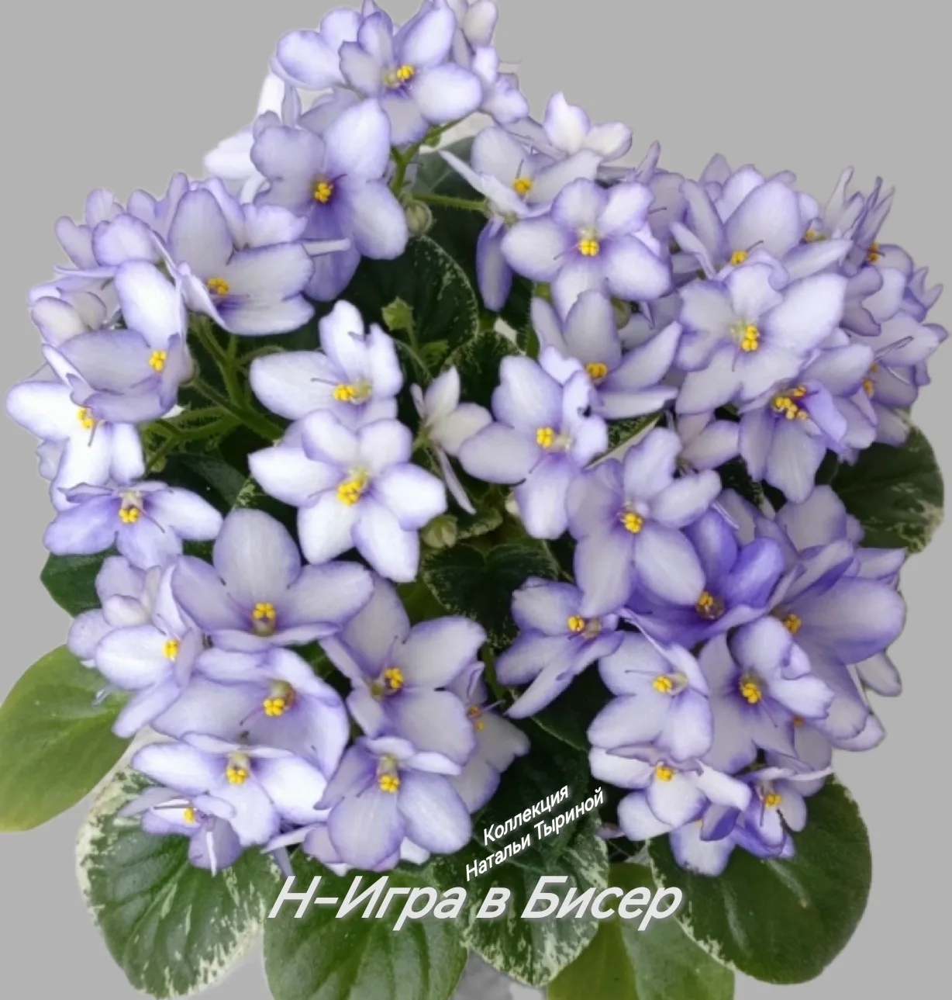
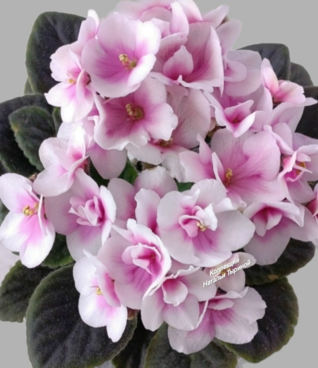
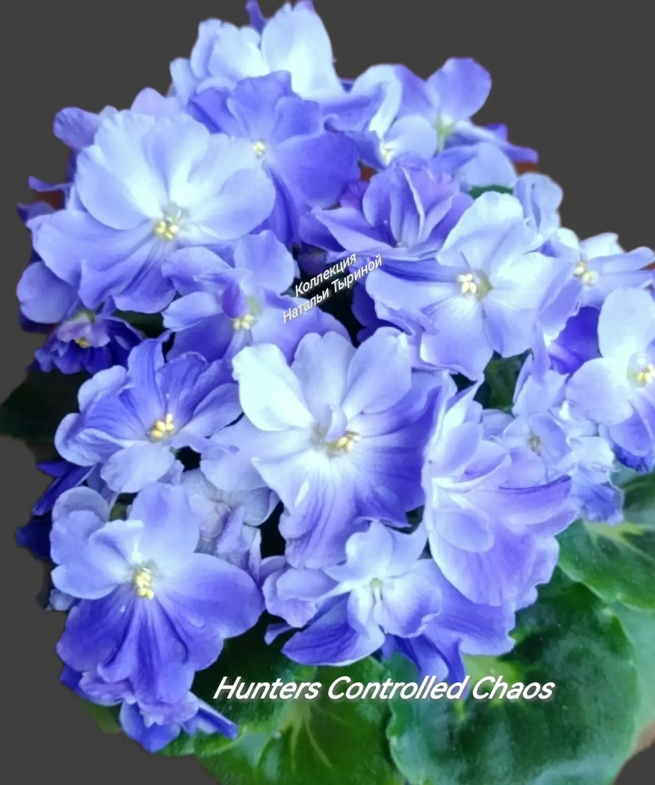
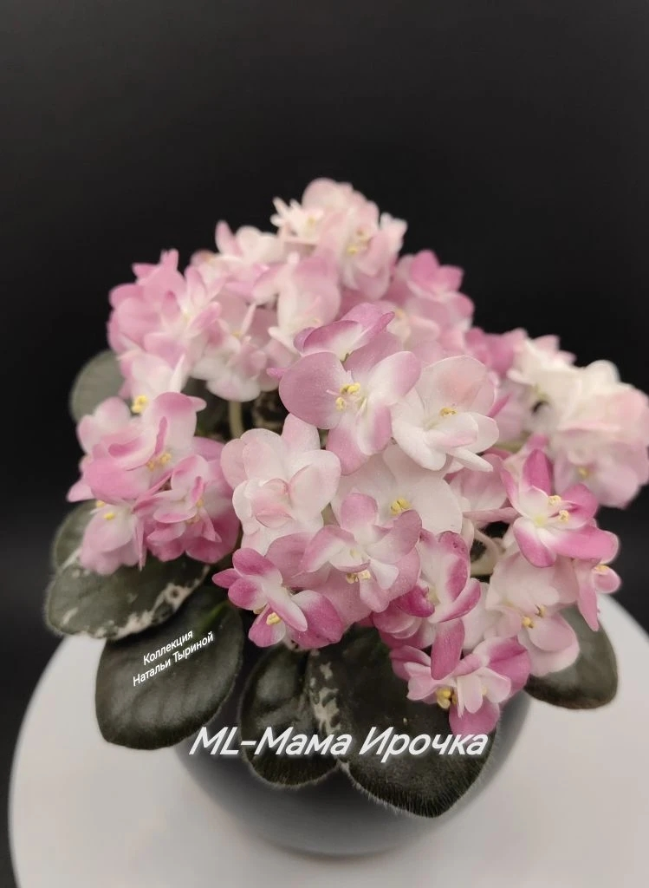
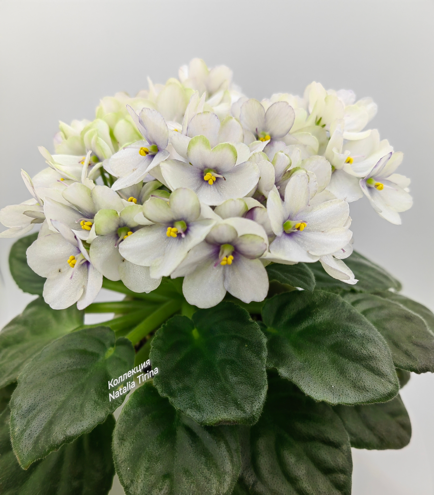
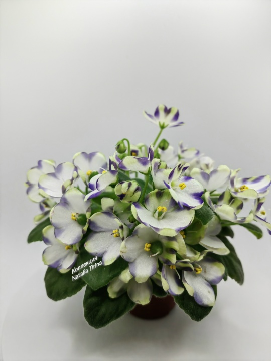
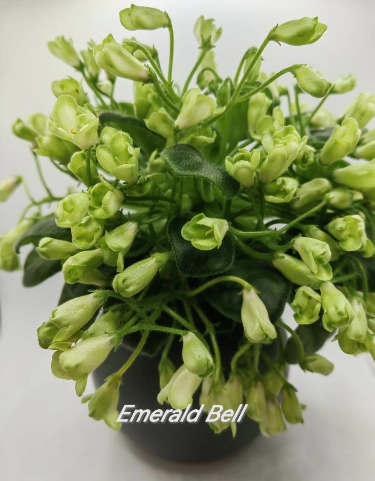
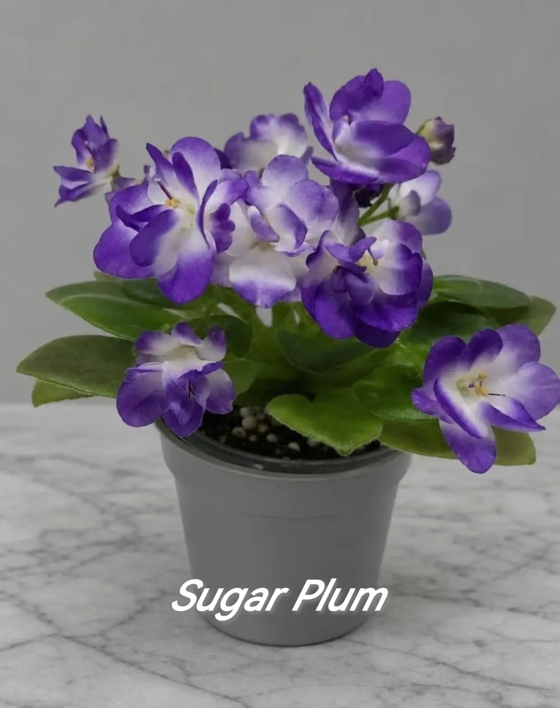

Фиалковая страсть
Коллекция Натальи Тыриной
Коллекция миниатюрных фиалок, выращенных с любовью и вниманием к каждой розетке.
Смотреть каталогО коллекции
Добро пожаловать в мир миниатюрных фиалок! Меня зовут Наталья Тырина, и я с огромной любовью собираю и выращиваю эти маленькие, но невероятно красивые растения. Здесь вы найдёте сорта из моей личной коллекции, которые я готова предложить в виде листовых черенков, а также подрощенные детки и стартеры. Все фотографии на сайте сделаны мной. Заходите в каталог, читайте статьи по уходу — и пусть фиалковая страсть захватит и вас!









